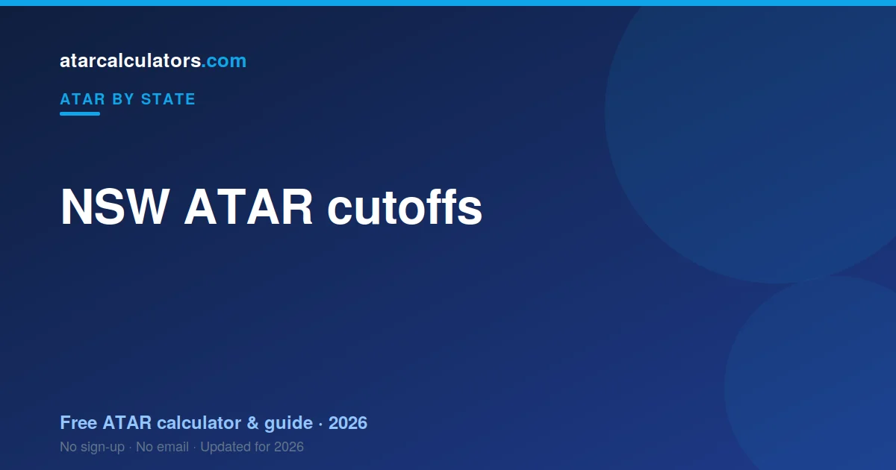

NSW ATAR cutoffs vary widely by course. Competitive degrees like medicine and law at the University of Sydney and UNSW need an ATAR of 95 or above. Many arts, business and science courses sit between 65 and 80. A cutoff is the ATAR of the last student who got an offer last year, so it moves with demand.
Key takeaways
- Cutoffs vary by course, from the 60s to 99+.
- Medicine and law at top NSW universities usually need 95+.
- Many arts, business and science courses sit between 65 and 80.
- A cutoff is the ATAR of the last student who got an offer, not a fixed pass mark.
- Cutoffs move each year with demand, so aim above the published figure.
- Adjustment factors can lower the ATAR you actually need.

What a NSW ATAR cutoff really means
A cutoff is not a pass mark set in advance. It is the ATAR of the last student who received an offer for that course last year. Everyone above it got in; the person right on it was the final offer.
This matters, because it means a cutoff is a result, not a rule. If more students want a course this year, the cutoff rises. If fewer apply, it falls.
The range across NSW courses
Cutoffs cover a huge span. At the top, the most in-demand degrees ask for near-perfect ATARs. In the middle, most general degrees sit comfortably in the 70s. Plenty of courses accept students in the 60s, especially with pathways.
So there is no single “NSW cutoff”. The number you need depends entirely on the course you want.
Competitive NSW courses
The highest cutoffs go to courses like medicine, law, and some commerce and engineering degrees at the University of Sydney, UNSW and UTS. Direct-entry medicine usually needs 95 and above, plus an admissions test.
Combined law degrees at leading NSW universities are similar, often sitting in the high 90s. These courses have few places and many strong applicants, which keeps cutoffs high. See ATAR for medicine and ATAR for law.
Mid-range NSW courses
Most degrees are far more reachable. Many arts, business, science, education and nursing courses at NSW universities sit between 65 and 80. Strong students clear these comfortably.
This is the range most students plan around. A solid ATAR in the high 70s or low 80s opens a wide choice of courses across the state.
Why NSW cutoffs move each year
Because a cutoff follows demand, it can shift from year to year. A course listed at 82 one year might land at 84 the next if more students apply. A quieter year can pull it down.
This is why you should treat any published cutoff as a guide and aim a few points above it. A buffer protects you from a busy year.
Adjustment and bonus points
The ATAR you need is not always the raw cutoff. Many NSW universities add adjustment factors, sometimes called bonus points, to your rank. These reward things like where you live, subjects you took, or difficulty during Year 12.
They lift your selection rank above your ATAR for that course. A student with an ATAR of 86 and five points is considered at 91. See how bonus points work.
Cutoff versus selection rank
Universities publish cutoffs as either an ATAR or a selection rank. A selection rank is your ATAR plus any adjustment points. So a course with a selection-rank cutoff of 90 might be reachable with an ATAR below 90, once your points are added.
Always check whether a cutoff is an ATAR or a selection rank. It changes how far your own ATAR needs to reach. Our selection rank calculator can help.
Check your NSW ATAR
Before you plan around cutoffs, get a sense of your own ATAR. Our NSW ATAR calculator estimates your ATAR from your HSC marks, using the latest official scaling.
Compare that estimate with the cutoff for your course, and you have a clear target for the rest of the year.
Cutoffs at the main NSW universities
Cutoffs vary not just by course but by university. The same degree can carry a higher cutoff at one university than another, simply because demand differs. The University of Sydney and UNSW often sit at the higher end, with UTS, Macquarie, Wollongong and Western Sydney offering a wider spread.
This is good news. If a course is out of reach at one university, the same or a similar course may be reachable at another. Always compare the cutoff for your exact course at each university you are considering.
Guaranteed entry and early offers
Many NSW universities publish guaranteed-entry ATARs for some courses. If you reach the stated ATAR, you are guaranteed an offer, which takes the guesswork out of those courses.
Universities also run early-offer schemes, sometimes based on your Year 11 results or a recommendation, before your ATAR is even released. These are worth exploring early, because they can secure a place before results day.
How to read a cutoff correctly
A cutoff is the ATAR of the last student who received an offer last year, not a guaranteed pass mark for this year. It tells you where a course landed, but it can shift with demand.
So treat a cutoff as a guide and aim a few points above it. A course listed at 88 one year might land at 90 the next. A buffer protects you from a busy year.
Cutoff versus your real chances
Meeting a cutoff does not always guarantee entry, and sitting just below it does not always rule you out. Adjustment factors, guaranteed-entry schemes and the exact mix of applicants all play a part.
The practical move is to list a range of preferences: a reach course above your expected ATAR, a solid match at it, and a safe option below. That way, whatever your ATAR, you have a strong offer coming.
Pathways if you miss the cutoff
Missing a cutoff is not the end of the road. NSW universities run diplomas that lead into a degree, enabling programs, and course transfers after a year of strong university marks.
Many students reach their goal degree through one of these routes. If your ATAR falls short of your first choice, a pathway often still gets you there, sometimes into the same degree a year later.
Why the same course varies between years
A cutoff can move each year, even for the same course at the same university. If more students apply, or more high-ATAR students list it, the cutoff rises. A quieter year pulls it down.
So last year’s cutoff is a guide, not a promise. Comparing two or three recent years gives you a better sense of where a course usually lands than any single figure.
Selection rank explained with an example
Universities often select on your selection rank, not your raw ATAR. Your selection rank is your ATAR plus any adjustment points you qualify for.
Say your ATAR is 87, and you qualify for five adjustment points for a course. Your selection rank for that course is 92. If the cutoff is a selection-rank cutoff of 90, you are above it, even though your ATAR is below. Always check whether a cutoff is an ATAR or a selection rank.
Reading a course entry page
University course pages can be dense. Look for three things: the ATAR or selection-rank cutoff, whether guaranteed entry applies, and any prerequisites or admissions tests. Those decide whether the course is realistic for you.
Prerequisites matter as much as the cutoff. A course might list an 85 cutoff, but if it also requires a specific subject you did not take, the cutoff alone will not get you in. Check every requirement, not just the number.
Hedging with your preference list
Your UAC preference list is a safety tool, not just a wish list. List a reach course above your expected ATAR, a solid match at it, and a safe option below. UAC gives you the highest preference you qualify for.
Ordered this way, your list protects you whatever your ATAR turns out to be. A strong result reaches your top choice; a lower one still lands you a good offer further down the list.
A cut-off is usually a first-round figure
A published NSW cut-off is generally the lowest selection rank admitted in a particular offer round. Later rounds can differ, and cut-offs can move as places fill or open up.
So treat a cut-off as a guide to a course's competitiveness, not a fixed pass mark. Your selection rank, which is your ATAR plus any adjustment points, is what is actually compared against it in each round.
Common questions
What ATAR do I need for university in NSW?
It depends on the course. Many arts, business and science degrees sit between 65 and 80, while competitive courses like medicine and law at USYD and UNSW usually need 95 or above.
What are the lowest-ATAR courses in NSW?
Many courses at NSW universities accept students in the 60s, especially through pathway programs and with adjustment factors. Regional campuses often have lower cutoffs than metropolitan ones.
Do NSW unis give adjustment or bonus points?
Yes. Many NSW universities add adjustment factors to your rank for things like your location, subjects, or difficulty faced during Year 12. These lift your selection rank above your ATAR for that course.
Is the cutoff the same as the average ATAR of students?
No. A cutoff is the ATAR of the last student who received an offer. The average ATAR of students in the course is usually higher, because many entered well above the cutoff.
Do NSW universities offer guaranteed entry?
Yes. Many NSW universities publish guaranteed-entry ATARs for some courses, so reaching the stated ATAR guarantees an offer. Many also run early-offer schemes before your ATAR is released.
What happens if I just miss a course cutoff?
You still have options. Adjustment factors may lift your selection rank, and NSW universities run diplomas, enabling programs and course transfers that lead into the same or a similar degree.